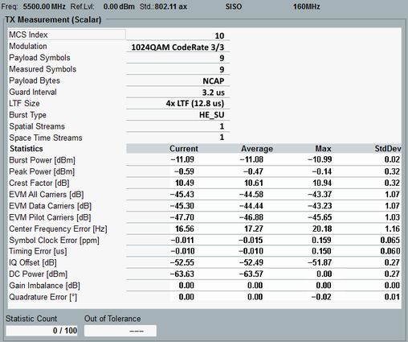

View TX Measurement (Scalar) for OFDM SISO
The view contains a table of statistical results.

OFDM SISO scalar results
The table provides the following results in the upper part:
- "MCS Index": modulation and coding scheme index, determining, for example, the modulation type and coding rate
Because the coding rate of HE TB PPDUs is not signaled, the MSC index of HE TB PPDU cannot be displayed. - "Modulation": see "Physical Layer"
- "Payload Symbols": number of OFDM symbols in the payload of the measured burst
- "Measured Symbols": number of measured OFDM symbols (only R&S CMW100/CMW with MUA)
- "Payload Bytes": number of bytes in the payload of the measured burst (only R&S CMW100/CMW with MUA)
- "Guard Interval": see "Physical Layer"
- "LTF Size": 802.11ax LTF type 1x LTF, 2x LTF or 4x LTF
- "Burst Type": see "Physical Layer"
- "Spatial Streams", "Space Time Streams": number of spatial streams NSS and space-time streams NSTS (only R&S CMW100/CMW with MUA)
- "Power Backoff": minimum distance of signal power to reference level since the start of the measurement
The backoff result helps you to configure optimum values for the expected power and the user margin. It is only available on R&S CMW100/CMW with MUA.
The result is not yet displayed on the GUI, but available via remote command.
In the lower part, the table provides results with statistical evaluation:
- "Burst Power": RMS value over the entire burst, including preamble and payload
- "Peak Power": peak value over the entire burst (only R&S CMW100/CMW with MUA and only up to 40 MHz channel bandwidth)
- "Crest Factor": crest factor of the burst (only R&S CMW100/CMW with MUA)
- EVM: error vector magnitudes for all subcarriers (data and pilot), for data subcarriers only and for pilot subcarriers only
- Center frequency error
- Symbol clock error
- Timing error (only OFDM signals using external trigger)
- I/Q origin offset
- "DC Power": power of the DC subcarriers (center frequency, only R&S CMW100/CMW with MUA)
- "Gain Imbalance": absolute value of (1 + I/Q imbalance)
For 802.11ac, this result is only available on an R&S CMW100/CMW with MUA. - "Quadrature Error": angular component of (1 + I/Q imbalance)
For 802.11ac, this result is only available on an R&S CMW100/CMW with MUA.
According to the standard, the test must be performed over at least 20 PPDUs. The PPDUs under test must be at least 16 data OFDM symbols long. A smaller "Payload Length" is highlighted in red and indicated by a warning message. |
For query of the results via remote control, see:
For additional information, refer to "Common View Elements".